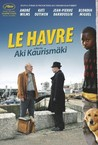
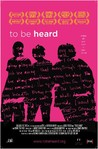
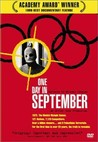

Movie Releases By Score


|
801.
Short Term 12
Release Date:
August 23, 2013

Grace (Brie Larson), a young supervising staff member of a foster care facility, looks after troubled teens and reckons with her own past alongside her co-worker and longtime boyfriend, Mason (John Gallagher Jr.).
|
|
|
802.
Parenthood
Release Date:
August 2, 1989

Gil Martin is a funny and loving husband who's also tries too hard to be the "perfect" parent to his uniquely different kids. (Universal Studios)
|

|
803.
Star Wars: Episode V - The Empire Strikes Back
Release Date:
May 21, 1980

Three years after the events of Star Wars, Imperial forces continue to pursue the Rebels. After the Rebellion?s defeat on the ice planet Hoth, Luke journeys to the planet Dagobah to train with Jedi Master Yoda, who has lived in hiding since the fall of the Republic. In an attempt to convert Luke to the dark side, Darth Vader lures young Skywalker into a trap in the Cloud City of Bespin. In the midst of a fierce lightsaber duel with the Sith Lord, Luke faces a startling revelation. [20th Century Fox]
|

|
804.
Our Beloved Month of August
Release Date:
September 3, 2010
In the heart of Portugal, amid the mountains, the month of August is abuzz with people and activity. Emigrants return home, set off fireworks, fight fires, sing karaoke, hurl themselves from bridges, hunt wild boar, drink beer, and make babies. Our Beloved Month of August is an intoxicating blend of visuals, sound and music that follows the strange relationship between a father, a daughter and a nephew in a traveling pop band. [Cinema Guild]
|

|
805.
Sugar
Release Date:
April 3, 2009
Sugar follows the story of Miguel Santos, a.k.a. Sugar, a Dominican pitcher from San Pedro De Macorís, struggling to make it to the big leagues and pull himself and his family out of poverty. Playing professionally at a baseball academy in the Dominican Republic, Miguel finally gets his break at age 19 when he advances to the United States’ minor league system; but when his play on the mound falters, he begins to question the single-mindedness of his life’s ambition. (Sony Pictures Classics)
|

|
806.
Marwencol
Release Date:
October 8, 2010
On April 8, 2000, Mark Hogancamp was brutally attacked outside of a bar by five men. Revived by paramedics, Mark had suffered brain damage and physical injuries so severe even his own mother didn’t recognize him. After nine days in a coma and 40 days in the hospital, Mark was discharged with little memory of his previous life. Unable to afford therapy, Mark decided to create his own. In his backyard, he built Marwencol, a 1/6th scale World War II-era town that he populated with dolls representing his friends, family and even his attackers. After a few years, Mark started documenting his miniature dramas with his camera. Through Mark’s lens, these were no longer dolls – they were living, breathing characters in an epic WWII story full of violence, jealousy, longing and revenge. And he (or rather his alter ego, Captain Hogancamp) was the hero. When Mark’s stunningly realistic photos are discovered by an art magazine, and a prestigious gallery comes calling, his homemade therapy suddenly becomes “art,” forcing Mark to make a choice between the safety of his fictional town and the real world beyond it. [The Cinema Guild]
|

|
807.
The Wind That Shakes the Barley
Release Date:
March 16, 2007
In this historical drama, two brothers find themselves on opposing sides in Ireland's struggle for freedom from Britain.
|

|
808.
Face/Off
Release Date:
June 27, 1997
FBI agent Sean Archer (Travolta) knows how to stop elusive terrorist Castor Troy (Cage). He'll become him. Archer undergoes a futuristic surgery and has Troy's face mapped onto his, then infiltrates the terrorist's world to discover his deadly secrets. But as much as Archer looks and acts like Troy, he doesn't really know him. He never figures Troy will retaliate and force doctors to transform him into Archer. Now the agent faces a shattering nightmare: his archrival is living with his family. (Paramount)
|

|
809.
The Lobster
Release Date:
May 13, 2016
A love story set in the near future where single people, according to the rules of The City, are arrested and transferred to The Hotel. There they are obliged to find a matching mate in 45 days. If they fail, they are transformed into an animal of their choosing and released into The Woods. A desperate Man escapes from The Hotel to The Woods where The Loners live and falls in love, although it is against their rules.
|

|
810.
The Nightmare Before Christmas
Release Date:
October 22, 1993
Can Christmas be saved? Bored with the same old scare-and-scream routine, Jack Skellington, the Pumpkin King of Halloween Town, longs to spread the joy of Christmas. But his merry mission puts Santa in jeopardy and creates a nightmare for good little boys and girls everywhere. [Walt Disney]
|

|
811.
2001: A Space Odyssey
Release Date:
April 2, 1968

2001: A Space Odyssey is a countdown to tomorrow, a road map to human destiny, a quest for the infinite. To begin his voyage into the future, Kubrick visits our prehistoric ape-ancestry past, then leaps millenia (via one of the most mind-blowing jump cuts ever conceived) into colonized space, and ultimately whisks astronaut Bowman (Dullea) into uncharted realms of space, perhaps even into immortality. "Open the pod bay doors, HAL." Let the awe and mystery of a journey unlike any other begin. (Warner Bros.)
|

|
812.
Pride & Prejudice
Release Date:
November 11, 2005
Keira Knightly stars as Elizabeth Bennet in this classic tale of love and misunderstanding which unfolds in class-conscious England near the close of the 18th century. (Focus Features)
|

|
813.
The Squid and the Whale
Release Date:
October 5, 2005
The Squid and the Whale captures with extraordinary immediacy the inner workings of the Berkman family in 1986 Brooklyn.
|

|
814.
Winged Migration
Release Date:
April 18, 2003
This documentary examines the migratory patterns of birds through forty countries and all seven continents.
|

|
815.
Quince Tree of the Sun
Release Date:
May 5, 2000
A lovely portrait of celebrated Spanish painter Antonio Lopez Garcia as he paints the quince tree growing in his courtyard. The two and a half hour film offers perspectives on everything from artistic vision, realism, painting and film to life, mortality and possibility of eternal rebirth.
|

|
816.
The School of Rock
Release Date:
October 3, 2003
Hell raising guitarist with delusions of grandeur Dewey Finn (Black) has been kicked out of his band. Desperate for work, he impersonates a substitute teacher and turns a class of fifth grade high-achievers into high-voltage rock and rollers. (Paramount)
|

|
817.
Life and Nothing More
Release Date:
October 24, 2018
Standing on the edge of adulthood, Andrew yearns to find his purpose as a young African-American in today's America. With his mother longing to find more to her life then parenting, Andrew is forced to take on the mounting pressure of family responsibility. His search for connection with an absent father, leads him to a dangerous crossroads.
|

|
818.
Star Trek
Release Date:
May 7, 2009
The greatest adventure of all time begins with Star Trek, the incredible story of a young crew's maiden voyage onboard the most advanced starship ever created: the U.S.S. Enterprise. On a journey filled with action, comedy and cosmic peril, the new recruits must find a way to stop an evil being whose mission of vengeance threatens all of mankind. The fate of the galaxy rests in the hands of bitter rivals. One, James T. Kirk, is a delinquent, thrill-seeking Iowa farm boy. The other, Spock, was raised in a logic-based society that rejects all emotion. As fiery instinct clashes with calm reason, their unlikely but powerful partnership is the only thing capable of leading their crew through unimaginable danger, boldly going where no one has gone before! [Paramount]
|

|
819.
A Quiet Place
Release Date:
April 6, 2018
A family of four must navigate their lives in silence after mysterious creatures that hunt by sound threaten their survival. If they hear you, they hunt you.
|

|
820.
Deliverance
Release Date:
July 21, 1972
Intent on seeing the Cahulawassee River before it's turned into one huge lake, outdoor fanatic Lewis Medlock takes his friends on a river-rafting trip they'll never forget into the dangerous American back-country.
|

|
821.
Frances Ha
Release Date:
May 17, 2013
This small budget, black-and white-collaboration between writer/director Noah Baumbach and writer/star Greta Gerwig centers on Frances (Gerwig), an apprentice dancer fumbling through post-college life in New York City.
|

|
822.
The Namesake
Release Date:
March 9, 2007
Spanning two generations, two clashing cultures and two very different ways of life that crash into each other only to become lovingly intertwined, The Namesake is ultimately about the imminently relevant question: what does it mean to be an American family? [Fox Searchlight Pictures]
|

|
823.
A Hijacking
Release Date:
June 21, 2013
After hijacking the crew of a Danish cargo ship, Somali pirates engage in tense and lengthy negotiations with officials in Copenhagen.
|
824.
In the Family
Release Date:
April 22, 2012
In the town of Martin, Tennessee, Chip Hines, a precocious six year old, has only known life with his two dads, Cody and Joey. And a good life it is. When Cody dies suddenly in a car accident, Joey and Chip struggle to find their footing again. Just as they begin to, Cody’s will reveals that he named his sister as Chip’s guardian. The years of Joey’s acceptance into the family unravel as Chip is taken away from him. In his now solitary home life, Joey searches for a solution. The law is not on his side, but friends are. Armed with their comfort and inspired by memories of Cody, Joey finds a path to peace with the family and closer to his son. (In the Family Production)
|
|

|
825.
Hunger
Release Date:
December 5, 2008
Hunger follows life in the Maze Prison, Northern Ireland, with an interpretation of the highly emotive events surrounding the 1981 IRA Hunger Strike led by Bobby Sands. With an epic eye for detail, the film provides a timely exploration of what happens when body and mind are pushed to the uttermost limit. (IFC Films)
|

|
826.
Cold Comfort Farm
Release Date:
May 10, 1996
A young woman orphaned in London is forced to take up residence with a group of oddball relatives at their farm.
|

|
827.
Roll Red Roll
Release Date:
March 22, 2019
At a pre-season football party in small-town Steubenville, Ohio, a heinous crime took place: the assault of a teenage girl by members of the beloved high school football team. What transpired would garner national attention and result in the sentencing of two key offenders. But it was the disturbing social media evidence uncovered online by crime blogger Alex Goddard that provoked the most powerful questions about the case, and about the collusion of teen bystanders, teachers, parents and coaches to protect the assailants and discredit the victim. As it painstakingly reconstructs the night of the crime and its aftermath, Roll Red Roll uncovers the engrained rape culture at the heart of the incident, acting as a cautionary tale about what can happen when teenage social media bullying runs rampant and adults look the other way. The film unflinchingly asks: “why didn’t anyone stop it?”
|

|
828.
Dear Zachary: A Letter to a Son About His Father
Release Date:
October 31, 2008
Dear Zachary: A Letter to a Son About His Father is a uniquely intense and personal documentary about the murder of Kurt’s oldest friend and the unbelievable legal and emotional madness that ensued. (Oscilloscope Pictures)
|

|
829.
Anvil! The Story of Anvil
Release Date:
April 10, 2009
At 14, Toronto school friends Steve "Lips" Kudlow and Robb Reiner made a pact to rock together forever. They meant it. Their band, Anvil, went on to become the "demigods of Canadian metal," releasing one of the heaviest albums in metal history, 1982 Metal on Metal. The album influenced a musical generation, including Metallica, Slayer and Anthrax, that went on to sell millions of records. But Anvil's career took a different path, straight into obscurity. (Abramorama Films)
|

|
830.
The Trip
Release Date:
June 10, 2011
When Steve Coogan is asked by The Observer to tour the country's finest restaurants, he envisions it as the perfect getaway with his beautiful girlfriend. But, when she backs out on him, he has no one to accompany him but his best friend and source of eternal aggravation, Rob Brydon. As the brilliant comic duo, freestyling with flair, drive each other mad with constant competition and showdowns of competing impressions, the ultimate odd couple realize in the end a rich amount about not only good food, but the nature of fame, relationships and their own lives. [IFC Films]
|

|
831.
Harry Potter and the Prisoner of Azkaban
Release Date:
June 4, 2004
In Harry Potter and the Prisoner of Azkaban, Harry, Ron and Hermione, now teenagers, return for their third year at Hogwarts, where they are forced to face escaped prisoner, Sirius Black, who poses a great threat to Harry. Harry and his friends spend their third year learning how to handle a half-horse half-eagle Hippogriff, repel shape-shifting Boggarts and master the art of Divination. They also visit the wizarding village of Hogsmeade and the Shrieking Shack, which is considered the most haunted building in Britain. In addition to these new experiences, Harry must overcome the threats of the soul-sucking Dementors, outsmart a dangerous werewolf and finally deal with the truth about Sirius Black and his relationship to Harry and his parents. With his best friends, Harry masters advanced magic, crosses the barriers of time and changes the course of more than one life. [Warner Bros.]
|

|
832.
La Promesse (The Promise)
Release Date:
May 16, 1997
Igor and his father, Roger, are making a decent living renting apartments to illegal immigrants and sometimes working them illegally (among other scams). But when the building inspector pays a surprise visit and Amidou falls off a scaffold in his hurry to hide, things start to unravel, particularly when Igor makes a promise to the injured Amidou that ultimately exposes the different values of Igor and Roger, and of Amidou's wife, Assita.
|

|
833.
Our Time Will Come
Release Date:
July 7, 2017
Based on the true story of Fang Gu (Zhou Xun), a school teacher, and the legendary, JinJin “Blackie” Lau (Eddie Peng), Our Time Will Come recounts the exploits of the Dongjiang during World War II. Tasked with fighting against the Japanese occupation of Hong Kong, this ragtag group of guerrillas recruits Gu, all against the wishes of her childhood sweetheart, Li Jinrong (Wallace Huo).
|

|
834.
Levitated Mass
Release Date:
September 5, 2014
Prominently displayed outside the Los Angeles County Museum of Art (LACMA), land artist Michael Heizer’s Levitated Mass gained worldwide recognition during its installation in 2012. Over 10 nights, a 340-ton solid granite boulder crawled through Southern California neighborhoods on a 294-foot-long, 206-wheeled trailer. Thousands of people came out to watch it travel through their communities. It is one of the only pieces of art in recent history to inspire such a reaction in pop culture. The film masterfully interweaves this artist's biography, the dreams of a major museum, and the uniting of a city, examining the perennial question: what is art? [First Run Features]
|

|
835.
Michael Clayton
Release Date:
October 5, 2007
Michael Clayton (George Clooney) is an in-house "fixer" at one of the largest corporate law firms in New York. At the behest of the firm’s co-founder Marty Bach, Clayton, a former prosecutor from a family of cops, takes care of Kenner, Bach & Ledeen’s dirtiest work. Clayton cleans up clients’ messes, handling anything from hit-and-runs and damaging stories in the press to shoplifting wives and crooked politicians. Burned out and discontented in his job, Clayton is inextricably tied to the firm. At the agrochemical company U/North, the career of in-house chief counsel Karen Crowder rests on the settlement of the suit that Kenner, Bach & Ledeen is leading to a seemingly successful conclusion. When the firms top litigator, the brilliant Arthur Edens, has an apparent breakdown and tries to sabotage the entire case, Marty Back sends Michael Clayton to tackle this unprecedented disaster and in doing so, Clayton comes face to face with the reality of what he has become. (Warner Bros.)
|

|
836.
Downfall
Release Date:
February 18, 2005
A portrait of Hitler's final days in his Berlin bunker at the end of WWII.
|

|
837.
The Spectacular Now
Release Date:
August 2, 2013
This is the tale of Sutter Keely, a high school senior and effortless charmer, and of how he unexpectedly falls in love with "the good girl" Aimee Finecky. What starts as an unlikely romance, becomes a sharp-eyed, straight-up snapshot of the heady confusion and haunting passion of youth – one that doesn’t look for tidy truths. [A24]
|

|
838.
Let the Right One In
Release Date:
October 24, 2008
A fragile, anxious boy, 12-year-old Oskar is regularly bullied by his stronger classmates but never strikes back. The lonely boy's wish for a friend seems to come true when he meets Eli, also 12, who moves in next door to him with her father. A pale, serious young girl, she only comes out at night and doesn't seem affected by the freezing temperatures. Coinciding with Eli's arrival is a series of inexplicable disappearances and murders. One man is found tied to a tree, another frozen in the lake, a woman bitten in the neck. Blood seems to be the common denominator. But by now a subtle romance has blossomed between Oskar and Eli, and she gives him the strength to fight back against his aggressors. (Magnolia Pictures)
|

|
839.
Rams
Release Date:
February 3, 2016
In a secluded valley in Iceland, Gummi and Kiddi live side by side, tending to their sheep. Their ancestral sheep-stock is considered one of the country’s best and the two brothers are repeatedly awarded for their prized rams who carry an ancient lineage. Although they share the land and a way of life, Gummi and Kiddi have not spoken to each other in four decades. When a lethal disease suddenly infects Kiddi’s sheep, the entire valley comes under threat. The authorities decide to cull all the animals in the area to contain the outbreak. This is a near death sentence for the farmers, whose sheep are their main source of income, and many abandon their land. But Gummi and Kiddi don’t give up so easily – and each brother tries to stave off the disaster in his own fashion: Kiddi by using his rifle and Gummi by using his wits. As the authorities close in, the brothers will need to come together to save the special breed passed down for generations, and themselves, from extinction. [Cohen Media Group]
|

|
840.
Certified Copy
Release Date:
March 11, 2011
In Italy to promote his latest book, a middle-aged English writer meets a young French woman and jets off to San Gimignano with her. (IFC Films)
|

|
841.
The Waldheim Waltz
Release Date:
October 19, 2018
Ruth Beckermann documents the process of uncovering former UN Secretary General Kurt Waldheim’s wartime past. It shows the swift succession of new allegations by the World Jewish Congress during his Austrian presidential campaign, the denial by the Austrian political class, the outbreak of anti-Semitism and patriotism, which finally led to his election. Created from international archive material and what Beckermann shot at the time, the film shows that history repeats itself time and time again. [Menemsha Films]
|

|
842.
The Celebration
Release Date:
October 9, 1998
At Helge's 60th birthday party, some unpleasant family truths are revealed.
|

|
843.
Taxi to the Dark Side
Release Date:
January 18, 2008
Taxi to the Darkside, the latest prize-winning documentary from Oscar-nominee Alex Gibney, confirms his standing as one of the foremost non-fiction filmmakers working today. A stunning inquiry into the suspicious death of an Afghani taxi driver at Bagram air base in 2002, the film is a fastidiously assembled, uncommonly well-researched examination of how an innocent civilian was apprehended, imprisoned, tortured, and ultimately murdered by the greatest democracy on earth. Intermingling documents and records of the incident with candid testimony from eyewitnesses and participants, the film uncovers an inescapable link between the tragic incidents that unfolded in Bagram and the policies made at the very highest level of the United States government in Washington, D.C. Combining the cool detachment of a forensic expert with the heated indignation of a proud American who holds his country to a high standard, Gibney’s film reveals how the Bush administration has systematically betrayed the very ideals it professes to uphold. (THINKFilm)
|

|
844.
Nuts!
Release Date:
June 22, 2016
The mostly true story of Dr. John Romulus Brinkley, an eccentric genius who built an empire with his goat-testicle impotence cure and a million-watt radio station.
|

|
845.
The Love Witch
Release Date:
November 11, 2016
Elaine (Samantha Robinson), a beautiful young witch, is determined to find a man to love her. In her gothic Victorian apartment she makes spells and potions, and then picks up men and seduces them. However, her spells work too well, leaving her with a string of hapless victims. When she finally meets the man of her dreams, her desperation to be loved will drive her to the brink of insanity and murder.
|

|
846.
Marjorie Prime
Release Date:
August 18, 2017
In the near future, a time of artificial intelligence: 86-year-old Marjorie (Lois Smith)—a jumble of disparate, fading memories—has a handsome new companion (Jon Hamm) who looks like her deceased husband and is programmed to feed the story of her life back to her. What would we remember, and what would we forget, if given the chance?
|

|
847.
John McEnroe: In the Realm of Perfection
Release Date:
August 22, 2018
John McEnroe: In the Realm of Perfection revisits the rich bounty of 16-mm-shot footage of the left-handed tennis star John McEnroe, at the time the world’s top-ranked player, as he competes in the French Open at Paris’s Roland Garros Stadium in 1984. Close-ups and slow motion sequences of McEnroe competing, as well as instances of his notorious temper tantrums, highlight a ”man who played on the edge of his senses.” Far from a traditional documentary, Faraut probes the archival film to unpack both McEnroe’s attention to the sport and the footage itself, creating a lively and immersive look at a driven athlete, a study on the sport of tennis and the human body and movement, and finally how these all intersect with cinema itself.
|

|
848.
Down and Out in Beverly Hills
Release Date:
January 31, 1986
A rich but troubled family find their lives altered by the arrival of a vagrant who tries to drown himself in their swimming pool.
|

|
849.
Footnote
Release Date:
March 9, 2012
Eliezer and Uriel Shkolnik are both eccentric professors, who have dedicated their lives to their work in Talmudic Studies. The father, Eliezer, is a stubborn purist who fears the establishment and has never been recognized for his work. Meanwhile his son, Uriel, is an up-and-coming star in the field, who appears to feed on accolades, endlessly seeking recognition. Then one day, the tables turn. When Eliezer learns that he is to be awarded the Israel Prize, the most valuable honor for scholarship in the country, his vanity and desperate need for validation are exposed. His son, Uriel, is thrilled to see his father's achievements finally recognized but, in a darkly funny twist, is forced to choose between the advancement of his own career and his father's. Will he sabotage his father's glory? (Sony Pictures Classics)
|

|
850.
Steve Jobs
Release Date:
October 9, 2015
Set backstage at three iconic product launches and ending in 1998 with the unveiling of the iMac, Steve Jobs takes us behind the scenes of the digital revolution to paint an intimate portrait of the brilliant man at its epicenter. [Universal Pictures]
|

|
851.
Marley
Release Date:
April 20, 2012
Bob Marley's universal appeal, impact on music history and role as a social and political prophet is both unique and unparalleled. Marley is the definitive life story of the musician, revolutionary, and legend, from his early days to his rise to international superstardom. Made with the support of the Marley family, the film features rare footage, incredible performances and revelatory interviews with the people that knew him best. (Magnolia Pictures)
|

|
852.
The White Ribbon
Release Date:
December 30, 2009
A village in Protestant northern Germany. 1913-1914. On the eve of World War I. The story of the children and teenagers of a choir run by the village schoolteacher, and their families: the baron, the steward, the pastor, the doctor, the midwife, the tenant farmers. Strange accidents occur and gradually take on the character of a punishment ritual. Who is behind it all? The village schoolteacher observes, investigates and little by little discovers the incredible truth. Are we being asked to consider whether these events heralded something that would explode years later with the rise of Nazi Germany? Did these events contain the germs of the tragedies that followed? (Sony Classics)
|

|
853.
The Agronomist
Release Date:
April 23, 2004
This documentary is a profile of Jean Dominique, a Haitian radio journalist and human rights activist who was assassinated in 2000.
|

|
854.
Touching the Void
Release Date:
January 23, 2004
This documentary follows the climbers Joe Simpson and Simon Yates as they set out to climb the west face of the Siula Grande in the Peruvian Andes.
|

|
855.
Three Kings
Release Date:
October 1, 1999
A small group of adventurous American soldiers (Clooney, Whalberg, Ice Cube, Jonze) in Iraq at the end of the Gulf War is determined to steal a huge cache of gold reputed to be hidden somewhere near their desert base. Finding a map they believe will take them to the gold, the soldiers embark on a journey that leads to unexpected discoveries, enabling them to rise to a heroic challenge that drastically changes their lives. (Warner Brothers)
|

|
856.
Rachel Getting Married
Release Date:
October 3, 2008
When Kym returns to the Buchman family home for the wedding of her sister Rachel, she brings a long history of personal crisis, family conflict and tragedy along with her. The wedding couple’s abundant party of friends and relations have gathered for a joyful weekend of feasting, music and love, but Kym—with her biting one-liners and flair for bombshell drama—is a catalyst for long-simmering tensions in the family dynamic. (Sony Picture Classics)
|

|
857.
Certain Women
Release Date:
October 14, 2016
This look at three women striving to forge their own paths amidst the wide-open plains of the American Northwest follows a lawyer (Laura Dern) who finds herself contending with both office sexism and a hostage situation; a wife and mother (Michelle Williams) whose determination to build her dream home puts her at odds with the men in her life; and a young law student (Kristen Stewart) who forms an ambiguous bond with a lonely ranch hand (Lily Gladstone). As their stories intersect in subtle but powerful ways, a portrait emerges of flawed, but strong-willed individuals in the process of defining themselves. [IFC Films]
|
|

|
858.
Le Havre
Release Date:
October 21, 2011
In this warmhearted portrait of the French harbor city that gives the film its name, fate throws young African refugee Idrissa into the path of Marcel Marx, a well-spoken bohemian who works as a shoe-shiner. With innate optimism and the unwavering support of his community, Marcel stands up to officials doggedly pursuing the boy for deportation. A political fairy tale that exists somewhere between the reality of contemporary France and the classic cinema of Jean-Pierre Melville and Marcel Carné, Le Havre is a charming, deadpan delight. [Janus Films]
|

|
859.
An Elephant Sitting Still
Release Date:
March 8, 2019
Under the gloomy sky of a small town in northern China, different protagonists’ lives are intertwined in this furious tale of nihilistic rage. While protecting his friend from a dangerous school bully, 16-year-old Wei Bu pushes the tormentor down a staircase. Wei escapes the scene and later learns that the bully is hospitalized and gravely injured. Wei’s neighbor, the 60-year-old Wang Jin, is estranged from his family and, with nothing to lose, decides to join him. Later the pair is joined by Huang Ling, Wei’s classmate. She is bedeviled by a destructive affair with a married school official. Together, this unlikely and desperate trio, decide their only hope is to flee as the bully’s gangster brother, enraged parents and vindictive school authorities all go on a cold-blooded hunt for Wei across town. As Wei threads his way through the urban wilderness, he begins to come to terms with his own lost life. In the end, he boards a long-distance bus with Huang and Wang toward a city in Manchuria, where it is rumored that a circus elephant is said to be sitting still, seeming oblivious to the pain and tribulations of the world at large.
|

|
860.
Araby
Release Date:
June 22, 2018
Andre, a teenager, lives in an industrial town in Brazil near an old aluminum factory. One day, a factory worker, Cristiano, suffers an accident. Asked to go to Cristiano’s house to pick up clothes and documents, Andre stumbles on a notebook, and it’s here that Araby begins — or, rather, transforms. As Andre reads from the journal entries, we are plunged into Cristiano’s life, into stories of his wanderings, adventures, and loves. Beautifully written and filmed, Araby is a fable-like road movie about a young man who sets off on a ten-year journey in search of a better life. [Grasshopper Film]
|
|  |
861.
To Be Heard
Release Date:
October 14, 2011
To Be Heard is the story of three teens from the South Bronx whose struggle to change their lives begins when they start to write poetry. As writing and reciting become vehicles for their expressions of love, friendship, frustration, and hope, we watch these three youngsters emerge as accomplished self-aware artists, who use their creativity to alter their circumstances. (ITVS)
|

|
862.
Monos
Release Date:
TBA
On a faraway mountaintop, eight kids with guns watch over a hostage and a conscripted milk cow.
|

|
863.
Chicago
Release Date:
December 27, 2002
A new interpretation that takes the award-winning Broadway show into fresh and expansive cinematic realms, Chicago shifts adroitly from the reality of intrigue, rivalry and betrayal to spectacular fantasies of music and dance, offering tongue-in-cheek commentary on the cult of celebrity and the scandalous lengths to which people will go to attain it. [Miramax]
|

|
864.
Embrace of the Serpent
Release Date:
February 17, 2016
Embrace of the Serpent centers on Karamakate, an Amazonian shaman and the last survivor of his people, and the two scientists who, over the course of 40 years, build a friendship with him. The film was inspired by the real-life journals of two explorers (Theodor Koch-Grünberg and Richard Evans Schultes) who traveled through the Colombian Amazon during the last century in search of the sacred and difficult-to-find psychedelic Yakruna plant. [Oscilloscope Pictures]
|

|
865.
Under African Skies
Release Date:
May 11, 2012
Paul Simon’s Grammy-winning album Graceland – an irresistible and groundbreaking fusion of American and South African pop music — was an immediate hit when it was released in 1986. It also proved to be a lightning rod for controversy, after South African leaders protested that Simon had broken the cultural boycott of the nation’s oppressively racist apartheid regime. In the documentary Under African Skies, premiering at the 2012 Sundance Film Festival, Simon returns to South Africa, which formally ended apartheid in 1994 — 25 years after Graceland‘s release. Director Joe Berlinger (Paradise Lost 3: Purgatory) follows Simon as he reunites with his South African collaborators, and revisits the controversy the album caused, while luminaries like Oprah Winfrey, Quincy Jones, Lorne Michaels, David Bryne and Sir Paul McCartney share their thoughts on what the album meant to them. (Radical Media)
|
866.
Sieranevada
Release Date:
September 3, 2017
Three days after the terrorist attack on the offices of Parisian weekly Charlie Hebdo and forty days after the death of his father, Lary, a doctor in his forties is about to spend the Saturday at a family gathering to commemorate the deceased.But the occasion does not go according to expectations. Forced to confront his fears and his past, to rethink the place he holds within the family, Lary finds himself constraint to tell his version of the truth.
|
|

|
867.
Side by Side
Release Date:
August 17, 2012
Join Keanu Reeves on a tour of the past and the future of filmmaking in SIDE BY SIDE. Since the invention of cinema, the standard format for recording moving images has been film. Over the past two decades, a new form of digital filmmaking has emerged, creating a groundbreaking evolution in the medium. Reeves explores the development of cinema and the impact of digital filmmaking via in-depth interviews with Hollywood masters, such as James Cameron, David Fincher, David Lynch, Martin Scorsese, Steven Soderbergh, and many more. (Tribeca Films)
|

|
868.
Days of Glory
Release Date:
December 6, 2006
1943. The young North Africans had never stepped foot on French soil but because France was at war, Said, Abdelkader, Messaoud and Yassir enlisted in the French Army, along with 130,000 other "indigenous soldiers," to liberate the "fatherland" from the Nazi enemy. These heroes that history forgot won battles in Italy, Provence and the Vosges before finding themselves alone to defend an Alsatian village against a German battalion. (The Weinstein Company)
|

|
869.
My Summer of Love
Release Date:
June 17, 2005
This film vibrantly charts the emotional and physical hothouse effects that bloon one summer for two young women. (Focus Features)
|

|
870.
Isle of Dogs
Release Date:
March 23, 2018
Isle of Dogs tells the story of Atari Kobayashi, 12-year-old ward to corrupt Mayor Kobayashi. When, by Executive Decree, all the canine pets of Megasaki City are exiled to a vast garbage-dump called Trash Island, Atari sets off alone in a miniature Junior-Turbo Prop and flies across the river in search of his bodyguard-dog, Spots. There, with the assistance of a pack of newly-found mongrel friends, he begins an epic journey that will decide the fate and future of the entire Prefecture.
|

|
871.
Mountain
Release Date:
May 11, 2018
Only three centuries ago, setting out to climb a mountain would have been considered close to lunacy. Mountains were places of peril, not beauty, an upper world to be shunned, not sought out. Why do mountains now hold us spellbound, drawing us into their dominion, often at the cost of our lives? From Tibet to Australia, Alaska to Norway armed with drones, Go-Pros and helicopters, director Jennifer Peedom has fashioned an astonishing symphony of mountaineers, ice climbers, free soloists, heliskiers, snowboarders, wingsuiters and parachuting mountain bikers. Willem Dafoe provides a narration sampled from British mountaineer Robert Macfarlane’s acclaimed memoir Mountains of the Mind, and a classical score from the Australian Chamber Orchestra accompanies this majestic cinematic experience.
|

|
872.
Approaching the Elephant
Release Date:
February 20, 2015
Year one for Lucy, Jiovanni and director Alexander at the Teddy McArdle Free School in Little Falls, New Jersey, where classes are voluntary and rules are created by democratic vote. Wilder is there from the beginning, observing an indelible cast of outspoken young personalities as they form relationships, explore their surroundings and intensely debate rule violations, until it all comes to a head.
|

|
873.
Flamenco, Flamenco
Release Date:
November 21, 2014
Director Carlos Saura and cinematographer Vittorio Storaro capture 21 flamenco performances.
|

|
874.
Archipelago
Release Date:
June 27, 2014
Edward (Tom Hiddleston) is preparing to leave for a year of voluntary service in Africa. His mother Patricia (Kate Fahy) and his sister Cynthia (Lydia Leonard) decide to gather the family together, on a remote island, as a farewell trip to say goodbye to Edward. Hired cook Rose (Amy Lloyd) and painting teacher Christopher (Christopher Baker), though bought in to help, only serve to bring the family’s anxieties into sharper focus. When Edward’s father is delayed, the unspoken forces of absence and loss bring the family’s buried anger and repressed tension to the surface. [Kino Lorber]
|

|
875.
Mysteries of Lisbon
Release Date:
August 5, 2011
The core story centers on Joao, the bastard child of an ill-fated romance between two members of the aristocracy who are forbidden to marry, and his quest to discover the truth of his parentage. But this is just the start of an engrossing tale that follows a multitude of characters whose fates conjoin, separate and then rejoin again over three decades in Portugal, Spain, France and Italy. (Music Box Films)
|

|
876.
Mademoiselle Chambon
Release Date:
May 28, 2010
Mademoiselle Chambon is an elegant, moving tale of an unexpected romance between a married man and his son’s homeroom teacher — and their attempt to keep their desires from turning into a full-blown affair. [Lorber Films]
|

|
877.
Burma VJ: Reporter i et lukket land
Release Date:
May 20, 2009
While 100,000 people (including 1,000s of Buddhist monks) took to the streets to protest the country's repressive regime that has held them hostage for over 40 years, foreign news crews were banned to enter and the Internet was shut down. The Democratic Voice of Burma, a collective of 30 anonymous and underground video journalists (VJs) recorded these historic and dramatic events on handycams and smuggled the footage out of the country, where it was broadcast worldwide via satellite. Risking torture and life imprisonment, the VJs vividly document the brutal clashes with the military and undercover police – even after they themselves become targets of the authorities. (Oscilloscope Laboratories)
|

|
878.
Memories of Murder
Release Date:
June 24, 2005
Based on a true story, Memories of Murder is a Korean suspense thriller offering an unusual fusion of death and laughter, while recollecting truly nightmarish events. [Palm Pictures]
|

|
879.
The Return
Release Date:
February 6, 2004
In contemporary Russia young brothers Vanya and Andrey have grown a deep attachment to each other to make up for their fatherless childhood. They are shocked to discover their father has returned after a twelve year absence. With their mother's uneasy blessing Vanya and Andrey set out on what they believe will be a fishing vacation with their taciturn father. [Kino International]
|

|
880.
Lilya 4-Ever
Release Date:
April 18, 2003
Set in contemporary Russia, this film recounts 13-year-old Lilya's struggle to survive the grim streets.
|

|
881.
Read My Lips
Release Date:
July 5, 2002
This French thriller is an absorbing character study of two lonely outsiders (a deaf secretary and an ex-con), who gradually recognize their mutual dependency.
|

|
882.
Get Shorty
Release Date:
October 25, 1995
Chili Palmer (John Travolta) is a Miami loan shark who's sent to Los Angeles to collect on a gambling debt from film producer Harry Zimm (Gene Hackman). Chili soon discovers that loansharking was the perfect training ground for making movies...though you have to be ruthless to make it in Hollywood. [MGM]
|

|
883.
Frozen River
Release Date:
August 1, 2008
Frozen River is the story of Ray Eddy, an upstate New York trailer mom who is lured into the world of illegal immigrant smuggling when she meets a Mohawk girl who lives on a reservation that straddles the US-Canadian border. Broke after her husband takes off with the down payment for their new doublewide, Ray reluctantly teams up with Lila, a smuggler, and the two begin making runs across the frozen St. Lawrence River carrying illegal Chinese and Pakistani immigrants in the trunk of Ray’s Dodge Spirit. (Sony Pictures Classics)
|

|
884.
Drugstore Cowboy
Release Date:
October 6, 1989
A group of heroin addicts lead by Bob (Dillon) rob drugstores to continue their addictions.
|

|
885.
Heal the Living
Release Date:
April 14, 2017
Heal the Living follows three seemingly unrelated stories that carefully weave together: a French teenager and his friends on a surfing road trip that leads to tragedy; a woman in another town who learns that her weak heart is beginning to fail and action must be taken; and two teams of doctors and medical experts who struggle through their day-to-day attempts to save lives. Ultimately, it is an impassioned story of personal connections that philosophically, spiritually and literally plumbs the depths of the human heart. [Cohen Media Group]
|

|
886.
Love Is Strange
Release Date:
August 22, 2014
Ben (John Lithgow) and George (Alfred Molina) take advantage of New York's new marriage laws and tie the knot after being together for 39 years. Unfortunately, the Catholic school where George teaches does not approve, and they reluctantly fire him, forcing the couple to split up and stay with friends while they sell their apartment and look for cheaper housing. George crashes with two gay police officers, while Ben, who's a painter, bunks with his nephew's family in Brooklyn—a temporary situation that weighs heavily on all involved. [Sony Pictures Classics]
|

|
887.
The Girl Without Hands
Release Date:
July 21, 2017
In hard times, a miller sells his daughter to the Devil. Protected by her purity, she escapes from the Devil who, in revenge, deprives her of her hands. So begins her long journey towards the light... but in spite of her resilience and the new protection of a handsome prince's estate, the Devil devises a plan of his own.
|

|
888.
Blow-Up
Release Date:
December 18, 1966
A mod London photographer finds something very suspicious in the shots he has taken of a mysterious beauty in a desolate park.
|

|
889.
Tess
Release Date:
December 12, 1980
A young strong-willed peasant girl, becomes the affection of two men, in the end tragically falling into the arms of one.
|

|
890.
The Twilight Samurai
Release Date:
April 23, 2004
A family drama set in the late nineteenth century Japan, as the feudal Shogun period was giving way to the Meiji Restoration. [Empire Pictures]
|

|
891.
Concert for George
Release Date:
October 3, 2003
On the 29th of November 2002, one year to the day that George Harrison left us, his closest friends gathered at the Royal Albert Hall to celebrate his life in the only way they knew how - by playing his music.
|

|
892.
Late Marriage
Release Date:
May 17, 2002
Set within the Georgian émigré community of Tel Aviv, Late Marriage is a sexy and biting comedy of manners that investigates what happens when human beings get stuck between the rock of true love and the hard place of family tradition. (Magnolia Pictures)
|

|
893.
Waking Life
Release Date:
October 19, 2001
In this animated drama, a man walks through what may be a dream, flowing in and out of scenarios and encounters with strange characters. (Fox Searchlight)
|
|

|
894.
One Day in September
Release Date:
November 17, 2000
This documentary examines the events surrounding the 1972 Olympics in Munich, Germany, where eleven Israeli athletes were kidnapped and massacred by Palestinian terrorists.
|

|
895.
Requiem
Release Date:
October 20, 2006
Inspired by the same events that were previously dramatized in "The Exorcism of Emily Rose," this film portrays a first-year university student whose bout with epilepsy leads to a tragic exorcism.
|

|
896.
Thunder Road
Release Date:
October 12, 2018
Thunder Road follows a Texan police officer who loses his mother, custody of his daughter, and eventually his job. Inspired by one of the greatest songs ever written, we see officer Jim Arnaud apply this lullaby of his mother's to his life during his ongoing and often hilarious nervous breakdown.
|

|
897.
Neruda
Release Date:
December 16, 2016
Beloved poet Pablo Neruda (Luis Gnecco) is also the most famous communist in post-WWII Chile. When the political tides shift, he is forced underground, with a perseverant police inspector (Gael García Bernal) hot on his trail. Meanwhile, in Europe, the legend of the poet hounded by the policeman grows, and artists led by Pablo Picasso clamor for Neruda’s freedom. Neruda, however, sees the struggle with his police inspector nemesis as an opportunity to reinvent himself. He cunningly plays with the inspector, leaving clues designed to make their game of cat-and-mouse ever more perilous. In this story of a persecuted poet and his obsessive adversary, Neruda recognizes his own heroic possibilities: a chance to become a symbol for liberty, as well as a literary legend. [The Orchard]
|

|
898.
Blancanieves
Release Date:
March 29, 2013
Once upon a time there was a little girl who had never known her mother. She learned the art of her father, a famous bullfighter, but was hated by her evil stepmother. One day she ran away with a troupe of dwarves, and became a legend. This tribute to silent films is set in southern Spain in the 1920s. [Cohen Media Group]
|

|
899.
Once Upon a Time in Anatolia
Release Date:
January 4, 2012
Life in a small town is akin to journeying in the middle of the steppes: the sense that "something new and different" will spring up behind every hill, but always unerringly similar, tapering, vanishing or lingering monotonous roads. (NBC Film)
|

|
900.
Stranger by the Lake
Release Date:
January 24, 2014
Frank (Pierre Deladonchamps) spends his summer days hopelessly searching for companionship at a popular cruising spot on the shores of a lake in rural France. One day, he meets Michel (Christophe Paou), an attractive yet darkly mysterious man and falls blindly in love. When a death occurs, Frank and Michel become the primary suspects but they choose to ignore the dangers and instead continue to engage in their passionate and potentially lethal relationship. [Strand Releasing]
|